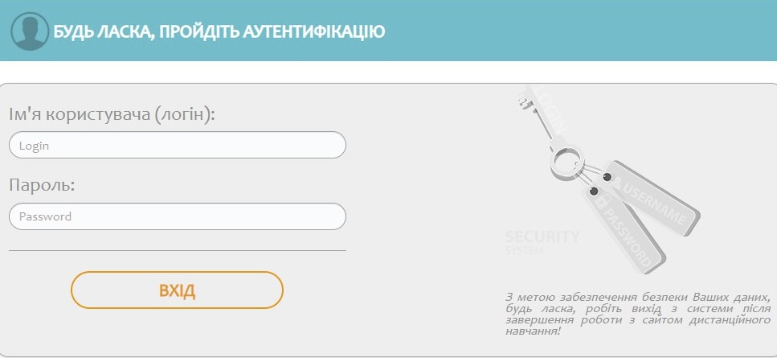

1 розділ сторінки
Перейти до резюме1 підрозділ сторінки
Посилання на закладки
Визначення веб-дизайну
Вебдизайн — галузь веброзробки, що охоплює цілий ряд напрямів і дисциплініз створення та супроводу сайтів або вебзастосунків, таких як графічний вебдизайн, проєктування інтерфейсів, авторинг, використовність та оптимізація для пошукових систем.
Посилання на закладки
Веб-сайти та типи їх класифікації
- Візитна картка;
- Голновна стіорінка;
- Персональний;
- Корпоративний;
- Інтернет-магазин;
- Каталог.
Типи класифікації веб-сайтів :
- За доступністю сервісів
- За природою змісту
- За фізичним розташуванням
- За завданням, що вирішується сайтом
- Статичний сайт — це сайт, вміст якого сталий та не може змінюватися під час відвідування сайту
- Динамічний сайт — сайт, що може змінюватися у процесі взаємодії з відвідувачем
Стилі веб-дизайну
- Мінімалізм
- Класичний стиль
- Стиль Ар-Деко
- Ретро
- Мальований стиль
- Інформаційний